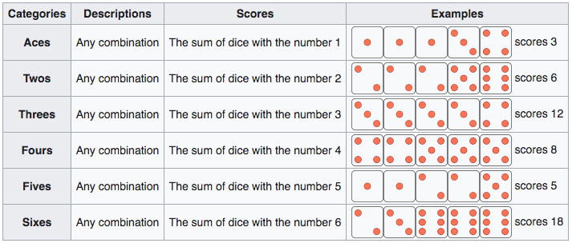
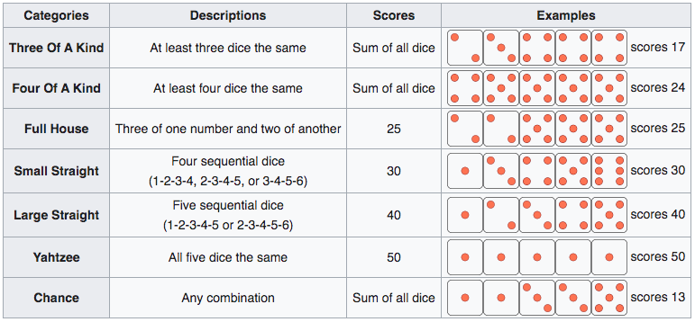

One at a time, enter the names of each player into the box below and click the button to add them to the game. Once all players are added click the "Start Game" button at the bottom to begin the game.
You need a minimum of 2 players, and are allowed a maximum of 6 players.
The game consists of a number of rounds. In each round, a player gets three rolls of the dice, although they can choose to end their turn after one or two rolls. After the first roll the player can save any dice they want and re-roll the other dice. This procedure is repeated after the second roll. The player has complete choice as to which dice to roll. It is possible to re-roll both dice that were or were not rolled before.
The Yahtzee scorecard contains 13 different category boxes and in each round, after the third roll, the player must choose one of these categories. The score entered in the box depends on how well the five dice match the scoring rule for the category. Details of the scoring rules for each category are given below.
The Yahtzee scorecard contains 13 scoring boxes divided into 2 parts.
In the first part there are six scores. Each of these scores is determined by adding the total number of dice matching the selected category. The categories correspond to each respective dice face. As an example, if three of your five dice rolled a 3, and you choose to add this result to the part 1 category "Threes" you will get a score of 9 ( = 3 * 3).
If a player scores a total of 63 or more points in these six categories from part 1, a bonus of 35 is added to the upper section score. Although 63 points corresponds to scoring exactly three-of-a-kind for each of the six boxes, a common way to get the bonus is by scoring four-of-a-kind for some numbers so that fewer of other numbers are needed.
The second part contains a number of poker-themed categories with specific point values. As an example, one of the categories is called Three of a Kind. The scoring rule for this category means that a player only scores if at least three of the five dice are the same value. The game is completed after 13 rounds by each player, with each of the 13 boxes filled. The total score is calculated by summing all thirteen boxes, together with any bonuses.
The Chance category is often used for a turn that will not score well in any other category.
In this version we have also added two other categories to this section: